Chapter-3
东三省拾趣·林海雪原的变奏
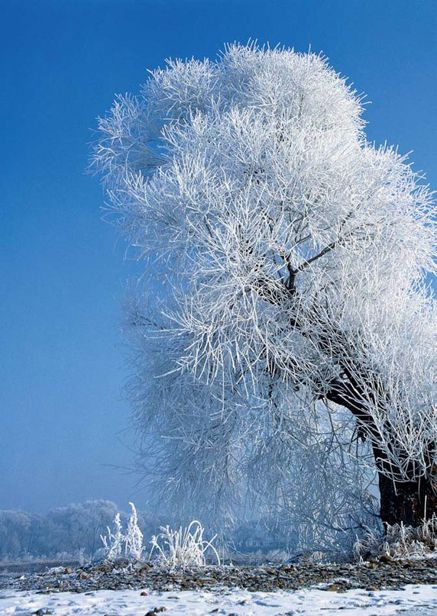
辽宁
Liaoning·北方初探
一只彩蝶翩翩起舞，落在那一片宫阙的琉璃瓦片上。北方以北，给了我们更多的期待。很想看海，顺着渤海湾的步子，一步步地跳跃，然后华丽地转身。也许你知道，也许你不知道，那潮汐漫过的沙滩上，曾记录着起点和终点的脚印，像我们逝去的华年，像夏夜的浪声滔滔的海边……
大连
Dalian
面 朝 大 海 ， 春 暖 花 开
……
陌生人，我也为你祝福
愿你有一个灿烂的前程
愿你有情人终成眷属
愿你在尘世获得幸福
我只愿面朝大海，春暖花开。
——海子
大连，一个遥远的北方城市，辽阔湛蓝的大海、明亮干爽的阳光，到处是高挑漂亮的北方姑娘。这里充满了无限风情，浪漫注定与整个城市结下不解之缘。一面是与青山相依，另一面与大海为伴，这个出于山峦地带的城市，却从不因峭壁般的海岸线失去点滴美好的色彩。从星海广场到十八盘，从棒棰岛到金石滩，每经过一处景致，感受着拂面的轻风，一路播撒下无限欢笑，将记忆的花蕾涂鸦上最斑斓的烂漫色彩。
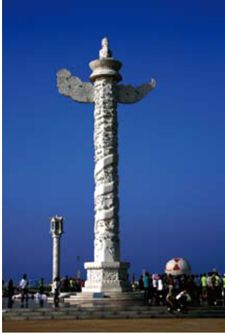
大连广场华表
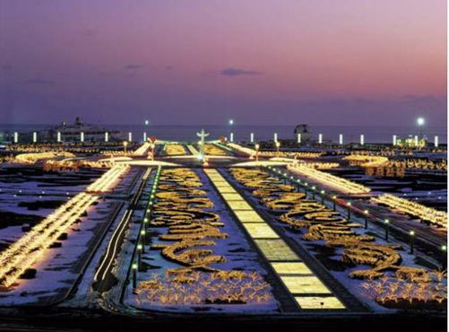
大连星海广场夜景
星海广场似乎成了大连的象征，建在香港回归之际的这个亚洲最大的公众广场，每时每刻都向世界讲述着今日朝气蓬勃的新兴大连。广场北部，现代化的星海会展中心拔地而起。南部，是百年城雕，在那里，100双脚印全部由真人踩成，代表大连过去历经的百年沧桑，而天真的儿童雕像，则意味着人们对于美好未来的盼望。
石滩，这里爱意正浓。一向因为湿润的气候被人们亲切地誉为“东北小江南”，每每来到，总是那片绿荫葱茏的姿态，和着淡淡青草的香气，在花丛中尽情舒展开来。“十里黄金海滩”的金沙在阳光下热烈地闪耀。
大连是这样一个地方：当你双脚踏上这座城市，便再也舍不得移动步子。清新的空气，一尘不染的花瓣，阵阵海浪冲上沙滩，在时光的悄然中给予着城市安静的祥和。海风，凉爽的，舒服的，让人想到若干年前海子“面朝大海，春暖花开”的憧憬。
现代化的都市，却给人清新明亮的乡村感觉。
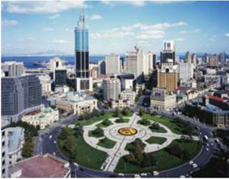
沈阳故宫
Imperial Palace of Shenyang
孩 提 时 代 的 梦 境
或许在这里，努尔哈赤和皇太极女真人的剽悍早已融入当地人们的风俗中，那磅礴的气势，从来都不必特殊解释。一片片满蒙汉建筑风格交错的街道边，历史，已然幻化成一道城市风景。
遥远的北方，处处透出那股难得的硬朗之气，记忆中，似乎那里永远是冰封时节的厚重。凛冽寒风中，将头深深地埋入棉衣，一瞬间，哈气成霜。然而，那飘香的酸菜白肉、老边饺子却总是轻而易举地破坏掉那份寒意，一抬头，满眼红墙绿瓦就那么不经意地流入人们的视线。
沈阳，一朝发祥地，两代帝王都。在超过2300年的历史中，它作为中华民族的发祥地之一，将粗犷又细腻的侠骨柔情演绎到了极致。有人说，沈阳故宫仿佛湖面上北京故宫的美丽倒影，虽没有北京故宫君临天下的霸气、气吞山河的强势，却多了几分秀气，几分不露声色的野心。
凤凰楼
沈阳故宫中的凤凰楼，建在4米高青砖砌成的台基之上，共三层高，楼顶铺设琉璃瓦，是当时盛京最高的建筑。著名的“盛京八景”之一，便是享有盛誉的“凤楼晓日”。同时，在凤凰楼上，还有着乾隆亲笔题的牌匾——紫气东来。
故宫门前的街道，依然保留着从前的模样。门楣上郭沫若先生的题字苍劲有力，似乎给予了对于这座宫殿的全部感情。
大政殿十几层台阶筑成的殿基由八根擎天柱稳妥地支撑着，形成亭子的形状，后人称呼这里为“八角楼”，实在贴切。富丽堂皇的装饰，似乎要将整个建筑包裹其中，殿顶由黄色的琉璃瓦重重铺就，绿色剪边点缀其上，殿内“彻上明造”彩绘着流光溢彩的花纹。
古老的文化名城，古老的历史遗存，皆因这里独特的气候而显出斑驳之感，无数个日月和流年的沧桑在这里一一显现。那视线中的崇政殿，便是昔日皇太极早朝的地方。略显空洞的殿宇在粗壮柱子的支撑下挺起它庞大而尊严的身躯。虽然光鲜不再、色彩褪去，而王毕竟是王，崇政殿内在的气质从不因岁月的乔迁而消失殆尽，反而更突显出历经岁月过后的安静祥和之气。游走于金銮殿上，触摸着皇朝千年历史，彩绘、宝座、屏风……无一不显出建筑技艺的高超与皇室的雍容华贵。
一座宫殿，一座城，在时光的长河中，苒苒不息地静享轮回。带走的是历史，留下的是记忆，瞻仰的时候，便是采撷了它最丰腴的片段。而这样的片段，分明意味着永恒。
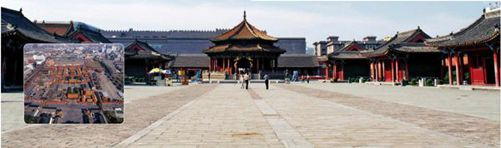
吉林
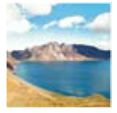
Jilin·锦绣家园
秧歌扭出了地域，高跷跨出了大门，这里的风土人情，其实比人们想象中的更加简单。敦实和厚重滋养了一方水土，于是那黝黝的黑土地上，便有了更多秀丽的风光，动人的景观。要知道，这里是边疆，却恪守着民族的尊严；这里是边疆，却是华夏子孙生息繁衍的家园……
长白山天池
Lake Tianchi in Changbai Mountain
仙 境 传 说
如果你看到岁月无情的剥蚀，那么请一定记得，剥蚀，其实是一种记录，若没有那份历练，眼中的长白山便没有今日的绮丽多姿。
长白山，光是那古色古香的名字便引发出文人的不竭遐思，千百年来，关于它的传说不计其数，比组成它的60座奇峰更要纷繁。“人参、灵芝、东北虎”，在它的庇护下，这些宝物吸取天地之精华，一直不断地生息繁衍。“一峰耸奇秀，数里诱人行”，一直以来，白云峰作为长白山的主峰，被人们广为传颂。
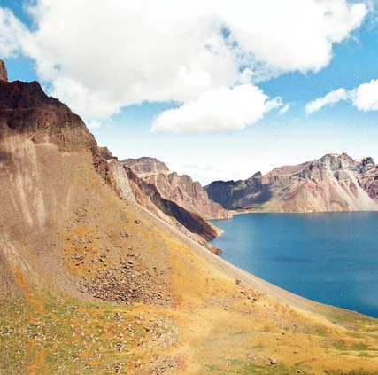
“天池”，明明是一座火山，却在数年之后积为美丽的湖水。天池本是一座湖泊，因为2194米的海拔，理所当然地成为最高的高山湖泊。这里是图们江之源，是松花江之头，也是鸭绿江之母……
冰雪覆盖的天池，像一个童话的世界。
攀越山崖的陡峭，躲过硕大的冰雹，穿过稀疏的林木，使劲全力，终于到达长白山主峰之巅，魂牵梦萦的长白山天池，就这样呈现在眼前。
山顶上那椭圆形的一汪蔚蓝，伴着缭绕的雾气，似幻似真地出现，带给人们至真至纯的感动。天地的界限变得不那么分明了，不知是幽蓝的天映蓝了那汪湖水，还是幽蓝的湖水漂染了上空的天。幽然与深邃充斥，美得惊艳，美得震撼。
熟悉这里的人常说，在天池，一年之中的放晴屈指可数，有人心怀不甘几次来到，却都是失望而归。若是赶上厚重的雾气，虽然就站在天池旁边，却看不到一滴水；若是赶上飞沙走石，眼睛都难得睁开，谈何赏景？若是赶上冰雹骤降，逃命还来不及……
而天池湖水从北面流入天池的一个出口，经过1200多米的流程，从70米高的绝壁流下，成为著名的长白山瀑布。因为长白山的水流长年不断，所以长白山瀑布的景观也久负盛名。据说，距离瀑布一公里的地方有三个温泉群，水中的硫化氢对治愈关节炎有特殊疗效……
这一弯碧水，想是天上的圣水流落。
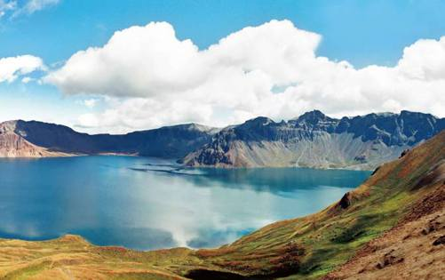
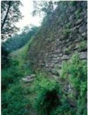
青翠的是自然，古老的是历史。
高句丽王城
City of the Ancient Koguryo Kingdom
边 疆 暮 古
它，古老而神秘，像玛雅曾有过的峥嵘岁月，却终究难耐时光的流转，在历史长河中成为一叶不知名的小舟。而印记，却以其独特的姿态凌驾于尘世之上，任时光浣洗千载，总能在一片安然中凸显，成为这个民族弥足珍贵的诗篇。
高句丽，在西汉到隋唐时期，这个特殊的边疆民族曾经影响了整个东北地域。他们的足迹遍布四处，从吉林南部到辽河以东，甚至延展到朝鲜半岛。独特的民族、独特的文化、独特的历史，在668年，终于抵不过唐王朝与新罗的强强联合，彻底消失殆尽。长达705年的持续，只能化作一份无边无际的想象，驰骋于后世的意象之中。
堪比古埃及金字塔的长寿王陵。
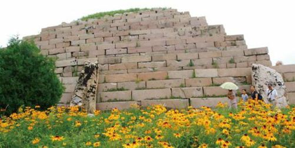
若不是高句丽王城迎风伫立的强硬姿态，也许这个曾经繁华的民族早已被人们遗忘在历史的角落。可是，高句丽的辉煌文明注定孕育出不朽的奇迹，不然怎么总会有后人慕着它的名纷至沓来，献上那般诚挚的问候？关于这段古老的记忆，甚至连史学家都觉得迷雾重重，而越是如此，它的魅力便越是散发得淋漓尽致——人们渴望了解它的心情就好像在探寻自己的前世，虽然举步维艰却仍是点滴挖掘，微微深入。
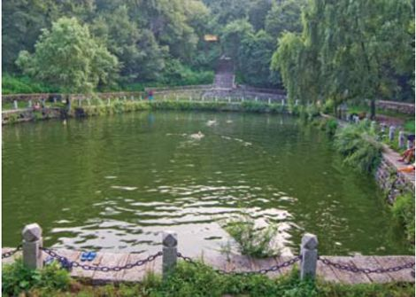
曾经的水牢，如今只剩一汪碧水。
在吉林省集安市，高句丽王城作为那个时代灿烂文化的代表，骄傲地伫立着。这里曾是高句丽早中期时候的都城，一个国家的政权就在这里被延续数年，也是因为如此，那最精美、最具特色的遗迹才能一一呈现，整个都城中，平原城与山城交相辉映，国内城与丸都山城共同担负起民族的兴衰荣辱。
国内城靠近集安市区的两端，西边靠近通沟河，南面毗邻鸭绿江，整座城池由石块砌成，周长2600多米。厚重的城门，便利的排水设施、城内林立的宫殿，后世从这些遗迹中出土大量文物，仿佛是那个民族特地送给后人的珍贵礼物。
城外，到处是壮观的王陵，或许只有那高高在上的君主，才更加急于让后世追溯起关于高句丽的往昔。堪比金字塔的“将军坟”，延续了长寿王的至高无上；凌驾于山麓之上的“太王陵”，显出好太王的武功显赫；沿城河岸修筑的“千秋墓”，不仅记载着壤王“千秋万岁永固”的憧憬，更因其庞大的规模成为高句丽墓葬之冠……
有人说，内墓中绘制的彩色壁画，象征了高句丽的艺术造诣，无论是出行或是歌舞，处处生活场景都体现出太平盛世般的和谐美好。确实，也许那鲜艳的色彩，便是高句丽这个特别的边疆民族短暂一生中，最为绮丽的一场梦。
长寿王陵
长寿王陵位于集安城东北4千米的龙山脚下。悬崖上伫立着的将军坟便是高句丽第二十代王长寿王之陵。长寿王陵的造型与古埃及法老的陵墓金字塔如出一辙，所以被后人称为“东方金字塔”。塔身长31米，高12米，7级阶梯，建筑雄伟，凸显庄严之气。
黑龙江
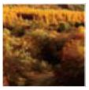
Heilongjiang
·北方图腾
一道动人心魄的风景线，生长在林莽之边。北方的最那端，圣山、神水、极光，一片是造物的恩宠，一口是上苍的馈赠，一束是灵魂的净化。艰苦卓绝后方显出一往无前是黑龙江的英雄之气，去追赶长风、拥抱日月吧，用千回百转的力量，冲出深山。
大兴安岭
Great Xing’anling Mountains
沃 土 连 天 崖
老人们总说：叶落归根。在东北，叶落一片多过一片，日子久了，也不知是根成全了叶，还是叶凝成了根。无数的根和叶手挽手、肩并肩，便长成了今日的茁壮。
大兴安岭是茁壮中的典范。它有樟子松的笔直、白杨树的挺拔、老柞树的容光，有人说，137个新加坡排排站也抵不过一个大兴安岭。的确，这里的地肥水美，那片黑土地上，种着东北人的全部希望。南起承德平原，北到黑龙江，作为内蒙古自治区的主要山系，那延绵着的1200千米的山脉，是大兴安岭最为骄傲的面孔。辽河、嫩江、松花江、黑龙江，水山一色，造物，更养人。
大兴安岭著名的白桦林
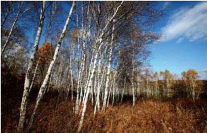
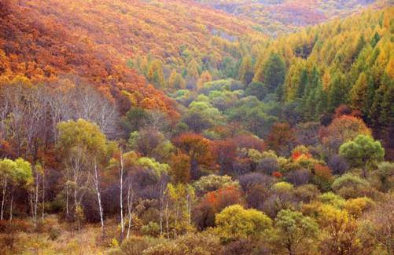
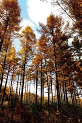
大兴安岭的魅力，当然浓墨重彩地在它的林木。
大兴安岭往返于四季之间，绽放的美丽就像种子破土而出般自然。春天，万物复苏；夏天，生机盎然；秋日，金光点点；冬季，纯洁烂漫……野花丛生不足以形容它的多姿，白桦笔直不足以道出它的气势，枫树火红不足以绘出它的凝重，美人松绿与皑皑白雪的相得益彰方才显出展开几寸兴安岭的美卷……
“巍巍兴安岭，积翠大森林。”珍稀的植被、濒临灭绝的野生动物、古生物化石、黑龙江之源……这里哪是座山岭？分明是一个天然聚宝盆！
说到聚宝，胭脂沟的传说让人们对兴安岭的好奇更多了几分。它位于漠河县的金沟林场，从清末到今天，这里一直以淘金圣地而闻名。胭脂沟本是额木尔河的一条支流，却因为盛产黄金而扬名于世。在过去的100多年中，那14千米长的水沟里，虽然沙土被淘了几十遍，却仍可以淘到金子。上苍把最富饶的土地赐予了东北，又把东北最肥沃的土壤安置在大兴安岭，土壤中不仅养活了动物、植物，还涉及到矿物，如此的博大，实在羡煞旁人。
饮水思源，提及黑龙江，洛古河的出场颇有些“犹抱琵琶半遮面”的味道。它不仅有宁静秀丽的两岸风光，还有源头第一村的农家风味。
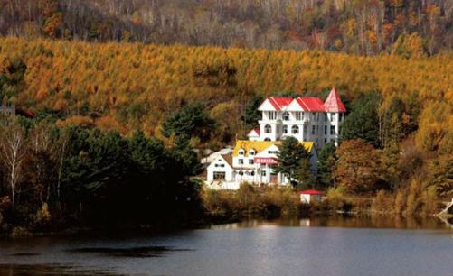
山环水绕、树木幻彩中的别墅，就像仙境中的宫殿。
相传，当地村民感激黑龙，因为它除去残害生灵、作恶多端的白龙，所以将江名取为“黑龙江”。这里本是一个很小的村落，却有过百年的历史。虽然只有不到40户的人家，远远望去，清一色的木刻楞建筑，可就是这样一个地方，不仅有了“冬暖夏凉”的小屋，还有了“清早船儿去撒网，晚上回来鱼满仓”的高级待遇。于是乎，这里的村民以打渔为主业，捎带着做点其他营生，日子过得不亦乐乎。
也许是为了避免擅自猎杀野生动物，从1984年起，桃山野生动物狩猎场作为第一个国际野生动物狩猎场被正式启用。在620平方公里的面积中，狩猎者可以自由行走。黑熊、野猪、雪兔、野鸭等众多的物种，让狩猎者为之疯狂。桃东林场还建有欧式风格的猎人宿营地，酒吧、客房、烧烤间一应俱全。狩猎与观景交替并行，这样的旅程，实在大快人心。
大兴安岭，不只有四季中的绮丽，更有着高大笔直的躯干，环绕在一片浓郁的绿色之间，为人们注入美好生活的信心和力量。
五道豁洛岛影视基地
在黑龙江中部的五道豁洛岛上，修建了一座3200平方米的影视基地。这里曾经因为拍摄《黑龙江三部曲》而修筑，9个景区中，牌楼、教堂、俄罗斯街道、瑷珲衙门、监狱等建筑物分列其中，超过50处景点，被后人称为晚清时期中俄两国城市建筑的“博物馆”。
五大连池
Wudalianchi
那 一 方 神 水
那片古老的神奇，甚至今天还印着熔岩曾经流动过的痕迹。谁能像造物主般伟大？潺潺的泉水，一流便是秋冬春夏，娓娓的故事，一道便是千秋万载。
五大连池，一座梦幻般的城市。5座相连的火山堰塞湖，佳景天成的内在气质成全了这一方净土的独特魅力。
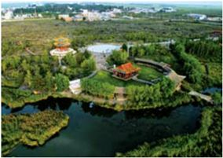
五大连池的饮泉。它是世界三大冷泉之一。
老黑山是五大连池中海拔最高的山。14座火山中，它是最高的一座。而它的魅力，不是山间的奇峰怪木，而是山峰火山口的蔚为壮观。那个漏斗一般的火山口，350米的直径，140米深度，每每探身向下望，不由得汗毛竖起，仿佛瞬间便是一落千丈的畏惧。
除了火山口，火山溶洞也是难得一见的地方。水帘洞与仙女宫分置其中，一汪静水衬托着水帘洞的静谧之气，而寒气逼人的仙女宫洞口，则为它的神奇平添了几分色彩。
而火山湖的美似乎超脱了“水”的定义。虽是泉水，却终年奔流不息，虽是泉水，却被誉为“神水”、“圣水”。据说每年端午的凌晨五点，喝过药泉山脚下的泉水，便能免除灾祸，事事顺心。
大自然的鬼斧神工，成就了人们寄予它的无限期望。
凌空三桥
凌空三桥是大沾河的一处景观。乘着森林小货车去大沾河漂流的途中会穿过人工开凿的岩壁，视线中沾河一号、二号、三号大桥纷至映入，三座桥像彩虹一般横跨在水面上，十分美丽。夏日，夕阳西下之时，远眺大桥，仿佛凌空铺设，分外壮观。
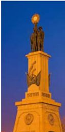
哈尔滨的苏联红军纪念碑
哈尔滨
Harbin
混 血 美 人
没有古都的风华绝代，没有时尚之都的亮丽光鲜，却在百余年的轮回中妖娆绽放，生长成为撩人夜色中让人惊艳的一位美人。
哈尔滨，从不因沙皇俄国的阴影而自卑，从不因一战爆发的阴霾而怯弱，若不是那时候的商户、移民，若不是那时候的暗战、特务，今日的“东方小巴黎”，何以傲然挺立在中国东北的松花江畔？
海纳百川，有容乃大。哈尔滨的美，便基于这样的胸襟。各民族、多国家的相互融合，即使是晦涩难懂的外国语言，也在比比划划间多了几分灵巧。贯通中西的天然优势，似乎成为这座城市迅速发展的砝码，早已暗示着未来某日的一飞冲天。别以为冰城就只有在冬季才尽显妩媚，看一看苍穹下哈尔滨那怒放的生命，犹如松花江里踌躇满志的鲤鱼，随时等待跨越龙门时的腾飞。
一座带异域风情的教堂，赫赫耀目。

漫步在哈尔滨的街头，满眼欧式风格的建筑伫立其间。笔直且宽阔的道路两旁，拒绝高层的小楼以白色、土黄等色调调和着整个城市的色彩。一路繁荣，一路欢歌，如今，这里又全然演绎出俄罗斯建筑的绮丽风格。
中央大街是街道中尤为引人注目的一条，往来如梭的人们，熙攘的人群，充满坚定的眼神，彰显出北方人的特质。虽然年代久远，路面高低起伏不平，可街道两边的建筑仍是显露出华丽的色彩、异国的情调。镶嵌在地上的花岗岩地砖，大理石柱上精致的浮雕，窗台上镂空的花纹，古老的俄式建筑，在时间的洗礼中更显出别致的韵味，幽深而绵长，将如烟往事散落一地。

在哈尔滨，有很多欧洲风情的教堂等建筑，它们有很多是俄罗斯风格，因为，它与俄罗斯是如此比邻。
隐约中，仿佛我便是那手持阳伞，身着蕾丝长裙的美丽女子，你便是那打好领结，身着帅气燕尾服的英俊男人，我搭着你的手，登上街角的维多利亚式马车，一场华丽的婚礼就此拉开序幕。原来，不经意的驻足，竟停留在高耸的教堂跟前。难怪脑海中的幻想会如泉涌一般汩汩。典型的俄式大教堂，教堂中是绿色的拜占庭风格，十字架巍峨地伫立在正中，附阁低调地守护左右……明朗的绿交替着古朴的红，教堂特立独行的美丽，让人心生虔诚。
哈尔滨，不仅美丽，且充满信仰。无论是基督教还是伊斯兰教，一处处别致的人文气息，总是吸引着世界各地知名的艺术家、传教士……将灵魂释放到自然古朴的风景中，那种心灵深处的向往，在这里，如遇海上灯塔般被指引，沐浴诸神的明光，迎接身体和灵魂超凡脱俗的新生。
当索菲亚教堂的钟声不再敲响，当这片土地不再满是神秘的镜像，每个清朗的清晨与黄昏，享受着列巴、红肠的美味，苏波汤的滋润，在哥特、巴洛克式的建筑中徜徉……就这样，中西合璧的极致被刻画淋漓，在风韵的哈尔滨，在美丽的松花江畔，一个凝固的音符，在与众多民族文化交融的时刻，终于奏出最为迷人的乐章。
“冰城”的冰雪之趣 Heilongjiang
冰糖葫芦的清凉蜜意，烤红薯的温暖情怀，在这样的冬季，精彩盛放。冬天里的哈尔滨，就像仲夏时节的西瓜、秋色中的海棠，那滋味，怎一个美字了得？
一座遥远的北方城市，一座洁白无瑕的冰雪之城，每每踏入冬季，这里都会因为不可抗拒的独特魅力吸引来四方宾朋。那晶莹剔透的色泽象征了一切稍纵即逝的美好事物，可是在哈尔滨，这样的美好却得到了延续。五彩斑斓的灯光下，哈尔滨将笑容绽放到极致。
在哈尔滨，冬季只有“短暂”一种说法。冰冻三尺的松花江畔，人们渴望创作的激情正浓。冰雕是北方艺人独特的技艺，千姿百态栩栩如生的作品，辅之以五颜六色炫目的灯光，一切，便从这些看似冷漠实则温暖人心的雕刻中伸展开来。
哈尔滨的雪雕。也许只有在这个冰雪之城才可以找到雪雕。
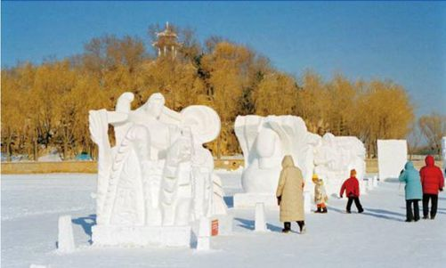
传说，古时候人们已经开始制作冰灯。他们将木桶里的冰冷凝成冰壳，再利用它来罩住火，如此一来，那夜色中的街道便失去了狰狞的面庞，冰壳中温暖的火烛不仅点亮了街道，更点亮了人们的内心。在哈尔滨，人们将最原始的冰灯改造，将艺术中的精髓融入冰灯的创作，就这样，冰灯变成了一种艺术形式，或是一点点诗情画意，或是一点点小资情调，握在手中的，早已经不是单纯的冰灯，而是一份心境，一个杰出的设计作品。
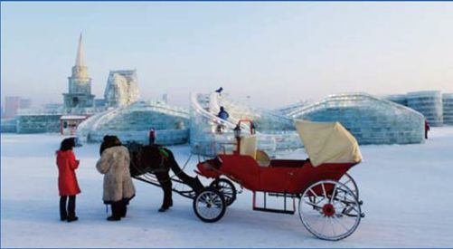
哈尔滨冰雕节
哈尔滨在东北这片黑土上，却有着与黑色相反的洁白冰晶的世界。当你在每年的1月5号到之后的一个月左右的冰雕节期间来这里，就可以欣赏到世界及中国大师的冰雕作品。
冰灯的生命是短暂的，犹如花开一季，心中难免些许失落。然而世事皆是如此，没有失去，何来珍惜？每年的1月5日到2月末，哈尔滨冰灯游园会会届时举办，独特的游园会，独特的设计作品，灵气活现的冰灯艺术异彩纷呈。另外，每年的冬天，哈尔滨的艺术家们都会利用这短暂的日子，在荒凉的土地上建起一座冰雪园林。用瞬间来表达永恒的概念，用瞬间的美好来记录下永恒的美丽。那样清澈透明的冰块，在艺术家们的手上精雕细琢，仿佛在观看一出著名的童话剧，整个过程充满了无限欣喜。轻轻抚摸，那巨龙的鳞片还都清晰可见，那俄式皇宫的塔尖圆润饱满，那雄狮猛虎一脸威猛，那琼楼玉宇华丽依然……
在哈尔滨，滑雪也是必不可少的冬季项目。脑海中揣摩着一个个疾驰而过的优美瞬间，于是，信步来到滑雪场，看一片白色寓言中，人们像燕子一般翩然而至，那样的情景，甚是浪漫。从高空而下，疾速飞身的过程中，那份酣畅淋漓，仿佛脚下的雪橇早已成为背后的羽翼，冲刺而下，一种激情，一种豪迈，一种心情，美妙绝伦。即使跌倒，也是笑声一片，和雪花的亲密接触，让人娇羞地红了两颊。从雪地中爬起，站稳后，又是一条好汉……
从滑雪场出来，还不忘逛逛冰雪世界的主题公园，看看欧式建筑的唯美，赏赏林海雪原的壮观，观看雪雕，欣赏冰雕，之后坐着缆车驶向山端。缆车凌驾在纯白色的上空，白色世界就此与视角重叠，成为眼中唯一的美丽景致。
漠河
Mohe
远 离 尘 世 的 北 极 村
“夜晚，那灿烂美丽的光辉，是来自前世盼望。你若看到那红的、绿的、蓝的、紫的光芒轻盈地飘荡在夜空，请伸出手臂迎接，请张开双眸凝望……在北方的北方，今生，我的名字叫做极光。”
漠河，遥远的北极之上，印象之中，除了皑皑的雪色，便是肆虐的北风。然而，就是这样的一个地方，却以它独特的方式，在每个时光辗转的日夜，涤荡人们的灵魂。
漠河是中国的最北端，被人们誉为“北国边陲”。“屋里屋外两重天”便是这里独一无二的真实写照，外面，纵然是千般冰雪，里面，却有着滚烫火炕。放眼望去，茫茫雪岭与青松林相互辉映，白色与墨绿色的交替，成为漠河正午时光中最亮丽的色彩。
雪，厚重的，纯白的。在这里，雪的纯洁被表现到极致。放眼望去，那大片空旷的雪地，总让人心生嬉戏的念头，或是躺在上面与“对手”抱成一团，或是和一群朋友握起雪团“奋战”撒欢儿，童年的快乐就这样涌上心头，那份来自于心底的无邪就这样书写成隽永。
漠河传统的农家
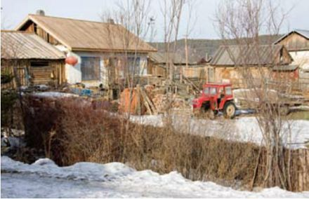
极光，漠河的一个绮丽的梦境，梦中，变幻莫测的炫目之光忽明忽暗，它是世上最美丽的光芒，美得决绝，美得独一无二。
漠河，一个清澈的世界，一个白色的天堂，即使来过，依然忍不住回眸凝望……